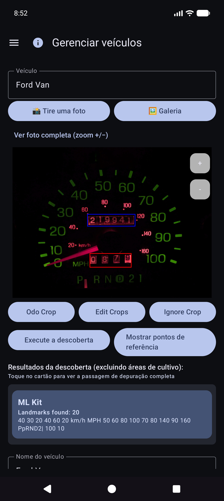
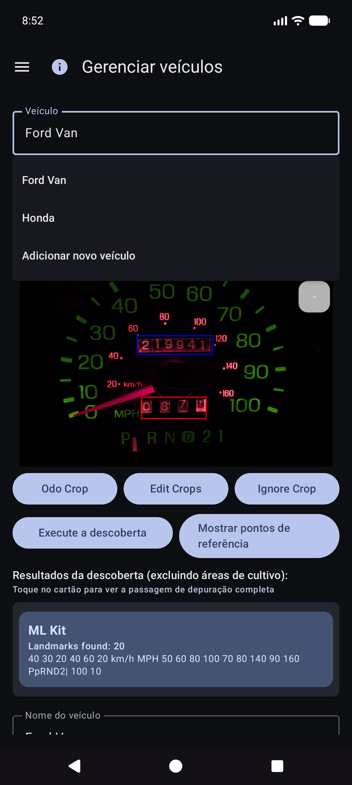
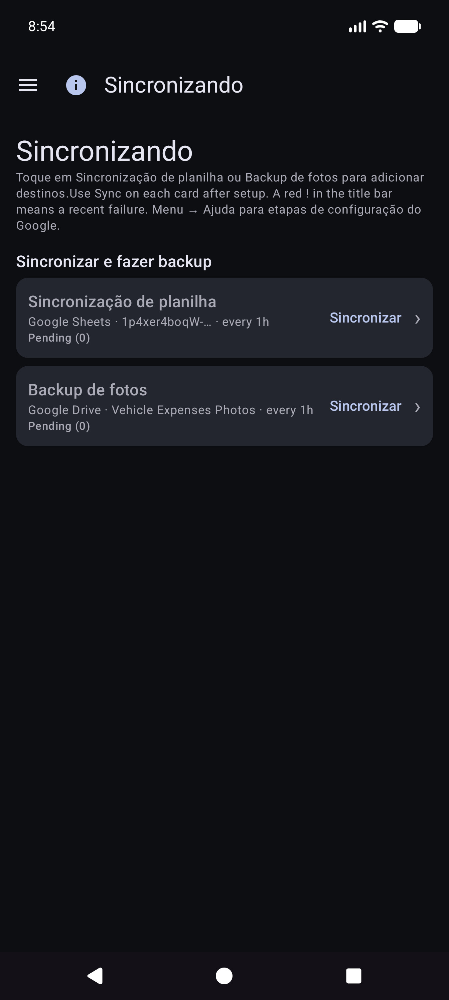
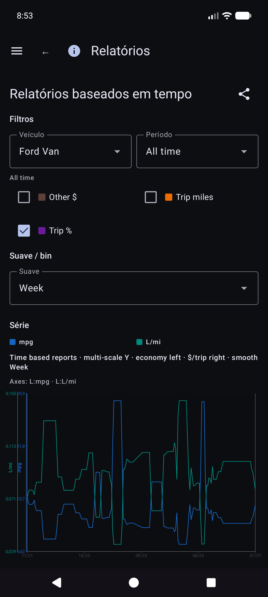
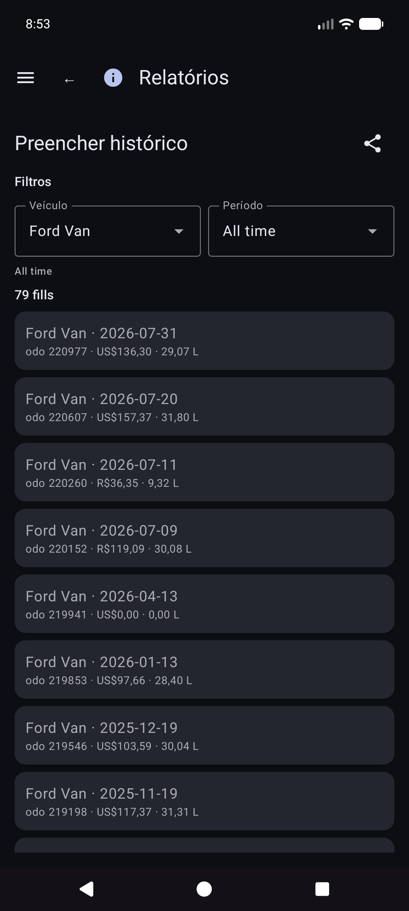
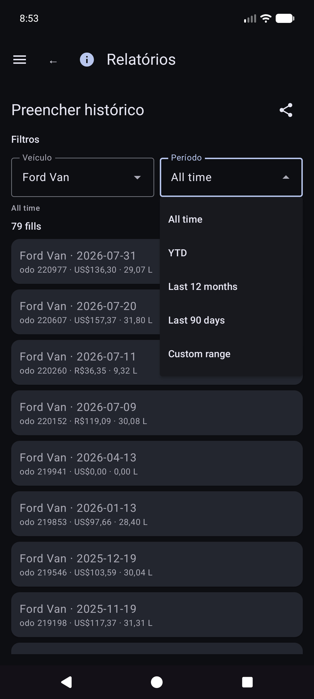
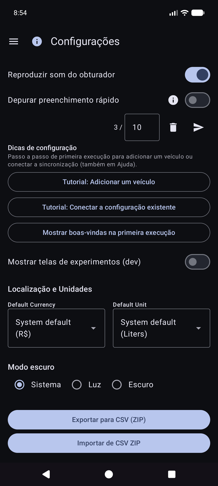
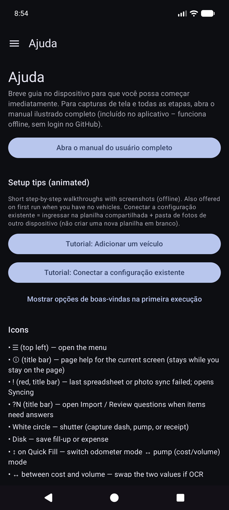

Vehicle Expenses Automated — full illustrated user manual (HTML for browsers). Edit source: docs/i18n/pt-BR/user-manual.md; regenerate with ./scripts/render-user-manual.sh.
Editar fonte (Markdown). Os navegadores e o leitor no aplicativo abrem o HTML renderizado:
- Web:docs/user-manual.html(regenerar com./scripts/render-user-manual.sh)
- Aplicativo: Ajuda / Sobre → manual completo (HTML + capturas de tela incluídas)Não direcione os usuários finais para URLs
.mdbrutos — os navegadores mostram apenas texto simples.
Rastreamento com câmera para abastecimentos de combustível e despesas de veículos, com sincronização opcional de vários dispositivos e backup em suas contas na nuvem.
Este é o manual completo (capturas de tela + todas as etapas). No telefone, Menu → Ajuda é um guia de primeiros passos mais curto.
Não abordado aqui: Importar imagens antigas, experimento de alinhamento e experimento de bomba (desenvolvedor/ferramentas avançadas).
Eles aparecem nas telas principais. Conhecê-los economiza muita caça.
| Onde | Ícone / controle | O que faz |
|---|---|---|
| Barra superior | ☰ Cardápio (hambúrguer) | Abre a gaveta de navegação |
| Barra superior | ⓘ (ajuda da página) | Breve ajuda para a página atual (ao lado do menu, quando disponível) |
| Barra superior | ?N (amarelo) |
Perguntas pendentes de revisão de importação — abre Revisão de importação |
| Barra superior | ! (vermelho) | Uma planilha ou destino de foto falhou recentemente. Abra Sincronizando para corrigir |
| Barra superior | ☰ + ← | Relatório de filhos e lista de despesas mostram menu e voltar juntos; O hub de relatórios é apenas menu |
| Configurações / edição de combustível | ← | Voltar (planilha/foto de configurações e edição de combustível permanecem focados) |
| Preenchimento rápido | Círculo branco (obturador) | Capture odômetro ou exibição da bomba para OCR |
| Preenchimento rápido | Disco / Salvar | Salvar o abastecimento (precisa de veículo e pelo menos um de odo/volume/custo) |
| Preenchimento rápido | ↕ setas (interruptor de modo) | Alternar entre modo hodômetro e modo bomba (custo/volume). Borda verde destaca grupo de campo ativo |
| Preenchimento rápido | ↔ setas (entre custo e volume) | Troque custo e volume se o OCR os colocar nos campos errados |
| Preenchimento rápido | Zoom 1x /… | Taxas de zoom da câmera quando a lente as suporta |
| Preenchimento rápido (após captura) | Atualizar no botão principal | Descartar visualização e retornar à câmera ao vivo |
| Preenchimento rápido (durante o processamento) | X no botão principal | Cancelar captura/OCR em andamento |
| Despesa | Salvar | Economize nas despesas |
| Despesa | Círculo do obturador | Tire uma foto do recibo |
| Despesa | Galeria | Escolha uma imagem de recibo da biblioteca |
| Despesa | Refazer | Limpe a foto do recibo atual e fotografe novamente |
| Despesar / Gerenciar Veículos | + / − FABs | Amplie a visualização da foto |
| Diálogo de pontos de referência | Editar OCR | Corrija ou adicione texto de referência que os motores perderam |
| Planilha/Formulários fotográficos | 🔍 Pesquisa | Procure uma planilha ou pasta no Google Drive (após fazer login) |
Os símbolos de moeda nos campos de custo e G/L nos campos de volume podem ser tocados: abra um pequeno menu para alterar a moeda ou galões versus litros para essa entrada.
Gaveta principal: Preenchimento rápido · Iniciar viagem · Gerenciar veículos · Novas despesas · Relatórios · Configurações · Sincronização · Ajuda · Sobre.
Gaveta de experimentos (Configurações → Mostrar telas de experimentos): Experimento de alinhamento · Experimento de bombeamento · Importar fotos antigas.
Via hub de Relatórios (não na gaveta principal): Lista de despesas · Preencher histórico.
OCR e a correspondência automática de veículos funcionam melhor depois que você registra cada veículo com uma foto de referência do painel, corta o hodômetro e executa o Discovery para que o aplicativo armazene o texto de referência para esse painel. (A forma como os pontos de referência são escolhidos e combinados será documentada com mais detalhes em uma atualização posterior.)
Menu → Gerenciar Veículos. Escolha um veículo (ou Adicionar novo veículo).


Depois de Mostrar pontos de referência, role a lista e corrija os valores. Às vezes, os motores perdem dígitos pequenos (por exemplo, um relógio 60 no canto inferior direito do cluster). Use Editar OCR para adicioná-los ou corrigi-los para que a identidade do veículo permaneça confiável.

Você ainda pode usar o aplicativo selecionando um veículo e digitando odômetro, volume e custo no Preenchimento rápido – o OCR é opcional para todos os campos. A importação da galeria funciona para a foto do painel de referência quando você prefere não fotografar no aplicativo.
Dica: após a sincronização da planilha, as definições de veículos (cultivos, pontos de referência) ficam no banco de dados local — você não precisa reabrir Gerenciar veículos para preenchimento rápido para usá-las.
O aplicativo foi desenvolvido para que vários telefones ou tablets possam compartilhar os mesmos dados da frota e para que você possa manter uma cópia de seus dados e fotos fora do dispositivo. Isso é feito com destinos que você configura em suas contas ou em seus servidores auto-hospedados — e não em uma “nuvem de despesas de veículos” administrada pela empresa que outras pessoas possam ver.
| Tipo | O que armazena | Uso típico |
|---|---|---|
| Planilha/sincronização tabular | Veículos, abastecimento de combustível, despesas (linhas e guias) | Mesclagem de vários dispositivos + backup estruturado |
| Backup de fotos | Imagens binárias (traço/bomba/recibo/fotos de referência) | Backup de fotos + restauração de arquivos ausentes |
Você pode configurar vários destinos de cada tipo (limitação flexível por tipo). Os trabalhadores manuais Sincronizem agora e em segundo plano executam os ativados.
O login e os tokens permanecem no dispositivo para os provedores que você escolher (Google, Microsoft, chaves S3, URLs auto-hospedados e assim por diante). Os destinos estão sob controle total do usuário — sua conta do Google, seu OneDrive, seu bucket MinIO, seu host EtherCalc, etc. Nada é compartilhado com outros usuários do Vehicle Expenses por meio de um back-end compartilhado.
Configurado em Menu → Sincronização → Sincronização de planilha (também acessível nas linhas de resumo das configurações). Opções de selecionador de primeira classe:
| Alvo | Notas |
|---|---|
| Planilhas Google | Inadimplência comum; guias para veículos, despesas e combustível por veículo |
| Excelente | Pasta de trabalho da Microsoft por meio de vinculação estilo Graph/OneDrive |
| EtherCalc | Salas de planilhas colaborativas auto-hospedadas |
| Outros → backends implementados | Baserow, NocoDB, Airtable, PocketBase, Supabase, Firebase, Zoho Sheet |
Adiado/ainda não decapitado (listado em Outros, mas não totalmente implementado): OnlyOffice, Collabora. Consulte também índice de auto-host.
CSV exportar/importar (ZIP do mesmo layout de guia) está disponível em Configurações como um backup portátil, independente da sincronização ao vivo.
Configurado em Menu → Sincronização → Backup de fotos (também nas linhas de resumo de configurações):
| Alvo | Notas |
|---|---|
| Google Drive | Pasta que você escolher (navegar ou colar URL) |
| OneDrive | Conta da Microsoft + prefixo do caminho |
| S3 | AWS, Wasabi, Cloudflare R2, MinIO e outros endpoints compatíveis com S3 |
| Outros | armazenamento apoiado por rclone (por exemplo, WebDAV, SFTP e outros controles remotos selecionados disponíveis no seletor no aplicativo) |
Configure cheatsheets para fotos auto-hospedadas e alvos tabulares: índice de auto-host.



Veículos, Despesas, Combustível - {nome do veículo}.


Manual Sincronizar agora para fotos é um passe completo; o backup em segundo plano normalmente processa uploads somente pendentes de acordo com uma programação.
Esta é a tela inicial quando você abre o aplicativo.
Você não precisa escolher o veículo primeiro. Quando os veículos têm pontos de referência configurados em Gerenciar veículos, o Preenchimento rápido detecta automaticamente qual veículo na imagem do painel após você capturar o hodômetro. Você ainda pode abrir o menu suspenso Veículo para substituir, se necessário.
Fique no modo hodômetro e enquadre o cluster. Instrução: * Mire no hodômetro. Toque no obturador para capturar.*

OCR preenche Odo e tenta combinar o veículo com os pontos de referência (revise ambos, se necessário). O botão principal se torna Tentar novamente para filmar novamente. A instrução resume a leitura.


Você permanece no Preenchimento Rápido para a próxima parada (campos limpos após salvar). Trabalhe totalmente off-line; a sincronização é executada posteriormente em segundo plano quando configurada.
Dica na tela (abaixo da linha de instruções): Obturador = capturar · Disco = salvar · ↕ = modo odo/bomba · ↔ = custo/volume de troca.
Menu → Nova despesa.

Menu → Relatórios → Lista de despesas — navegue pelas despesas anteriores não relacionadas ao combustível; abra um item para editar.

Abra uma linha da lista. Fornecedor correto, quantidade, categoria, veículo e descrição. Se o recibo estiver apenas no backup de fotos (sem arquivo local legível), use Buscar imagem do arquivo quando mostrado (funciona em destinos de fotos configurados).

Menu → Iniciar viagem (após Preenchimento Rápido na gaveta). Capture ou insira o hodômetro, escolha o tipo de viagem e salve com o ícone disco. Parar é um atalho para Pessoal agora na localização GPS mantida. Use ⓘ para lembretes de controle.

Os inícios da viagem são armazenados como linhas de combustível com um Tipo de viagem (não abastecimentos normais). Eles aparecem em Relatórios → Milhas de viagem, e não em Histórico de combustível.
Menu → Relatórios abre o hub do produto (resumo de todos os tempos + fichas de catálogo). Esta é a única superfície de relatórios de produtos – não há nenhum item de gaveta “Relatórios e Gráficos” separado.

Abra um cartão para modo veículo (Todos / Cada / Único), filtros de período, gráficos e compartilhamento (TEXTO / CSV / PDF). Barra superior nos filhos do relatório: ☰ + ← (e ⓘ quando registrado).
O cartão gráfico principal. Métricas opcionais (mpg, volume/distância como G/mi, preço unitário como $/G, custo/distância, $ mensais, milhas de viagem, % de viagem por tipo) com compartimentos Smooth e escalas Y independentes (economia à esquerda; dinheiro e famílias de viagem à direita).


Detalhes da matemática econômica: REPORTS_METRICS.md.

Relatórios → Milhas de viagem — milhas por tipo, gráficos e uma lista cronológica de início/segmento de viagem. Toque em um início real para abrir Editar preenchimento dessa linha.

Em Histórico de abastecimento, Histórico de combustível ou Milhas de viagem, abra um preenchimento. Layout: veículo e hodômetro, moeda antes do custo, volume, notas. O tipo de viagem aparece somente quando a linha é um início de viagem. A localização tem um resumo mais Detalhes da localização. Foto local ausente com identidade na nuvem: Buscar imagem do arquivo.

Outros cartões de catálogo incluem despesas por categoria, resumo do veículo e lista de despesas.
O Money usa a moeda de cada linha quando definida. Os totais em moedas mistas mostram subtotais por moeda (sem conversão FX silenciosa).
Menu → Sincronização é o centro para destinos de planilhas e fotos (não apenas enterrado em Configurações).

Menu → Configurações.


Para destinos, prefira Menu → Sincronização. As configurações ainda podem mostrar linhas de resumo que abrem as mesmas listas.
CSV exportar/importar (ZIP das guias Veículos / Despesas / Combustível) está disponível em Configurações quando oferecido pela versão atual.
